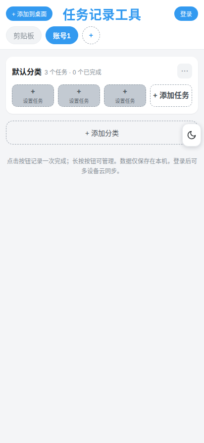
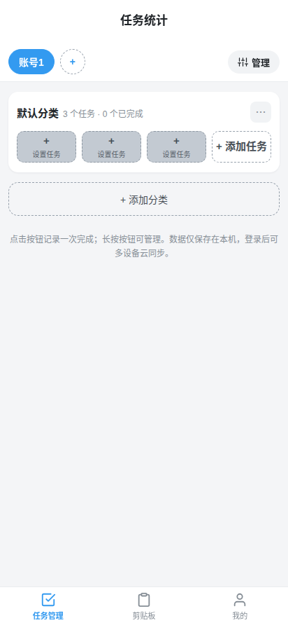
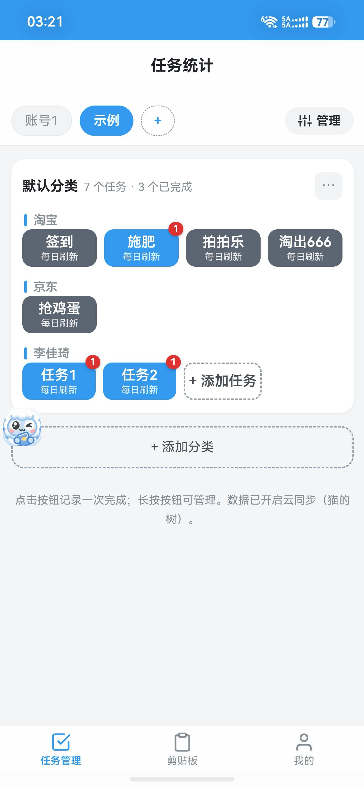
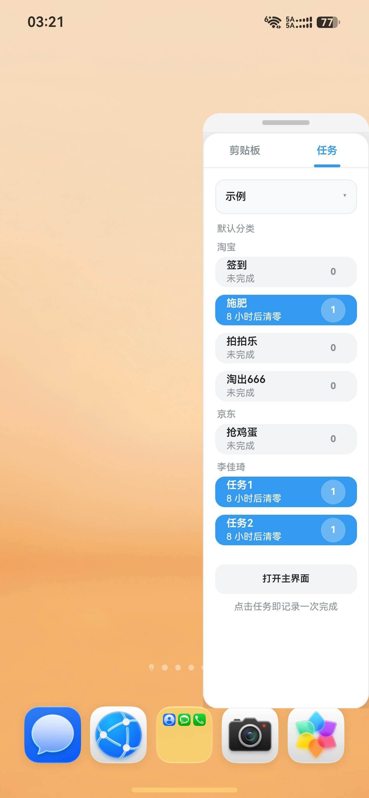
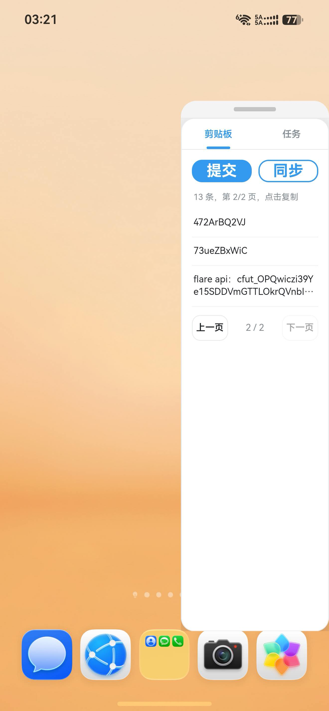
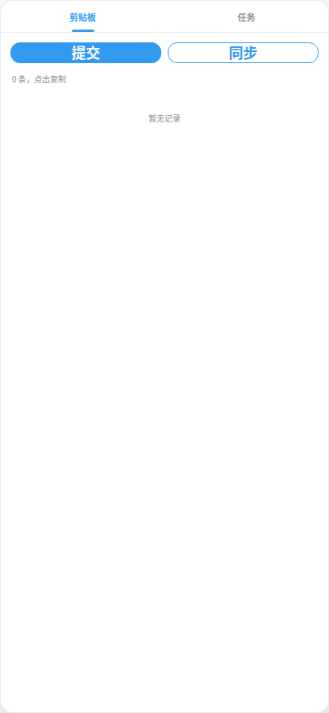

一个网页即可用的轻量工具：多端任务记录 + 剪贴板实时同步。
安卓 / 鸿蒙有专属 App，iOS / 电脑可「添加到主屏幕」当 App 用。

网页版主页 · 任意浏览器打开即用
| 端 | 形态 | 说明 |
|---|---|---|
| 网页版 | 任意浏览器 | 无需安装，扫码即用 |
| App（安卓 / 鸿蒙） | 下载 APK 安装 | 系统闹钟提醒 + 悬浮球快捷入口 |
| 添加到主屏幕 | iOS / 电脑 / 鸿蒙 | 把网页钉成图标，像原生 App |
所有端共享同一账号数据，实时同步——在 A 端复制，B 端立刻出现。

App 主界面 · 任务统计 / 分类 / 悬浮球
主界面按 分类 → 分组 两级展示任务：每个任务带「每日刷新」角标，蓝色表示今天已完成，红色数字表示剩余提醒次数；「添加任务」按钮固定显示在当前分类的最后一个分组里，点击按钮即记录一次完成，长按可管理。


从任意页面唤出悬浮球，面板内「任务」标签与主界面按相同分组顺序排列，点一下就记录完成；带倒计时的任务（如「8 小时后清零」）到点自动归零，适合抢购、签到类每日任务。
悬浮面板的「剪贴板」标签里，「提交」把手机当前剪贴板内容上传云端的「同步」拉取其他设备刚复制的记录；列表显示条数与页码，点任意一条即复制到本机，底部可翻页浏览历史记录。


悬浮面板 · 剪贴板 / 任务双标签，随时展开
⋮ 菜单安卓 / 鸿蒙 App：https://doctorstrange1122.github.io/task-record-tool/task.apk
加速下载（jsDelivr）：cdn.jsdelivr.net/gh/doctorstrange1122/task-record-tool@main/task.apk
网页版：直接用浏览器访问上方仓库的 Pages 地址。